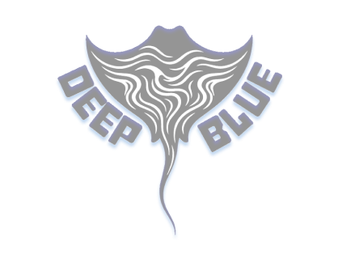
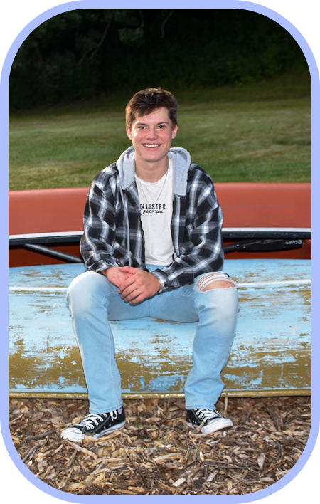

About Us
An introduction to the page.

Summary
Deep Blue began with a simple observation. Milwaukee is full of creative people, but its biggest festivals lean toward EDM, country, and rap, leaving alternative and indie fans with few places to call their own. For our founder, that gap felt like an invitation: if the city needed more festivals exploring smaller genres, someone had to build one. The name came from the idea of exploration, to explore earths darkest crevices, but the vision reaches further. The deepest parts of the ocean and the farthest corners of space share the same pull: vast, dark, quiet, and mostly undiscovered. Deep Blue brings those two frontiers together into one world. Part music festival, part art installation, it turns every stage, sculpture, and soundscape into something to chart and uncover.

Creator: Mason Korth
My name is Mason Korth. I am a graphic design major at UWM. I specialize in brand creation and graphical layouts. My biggest strength as a design is my ability to explore outside traditional design.